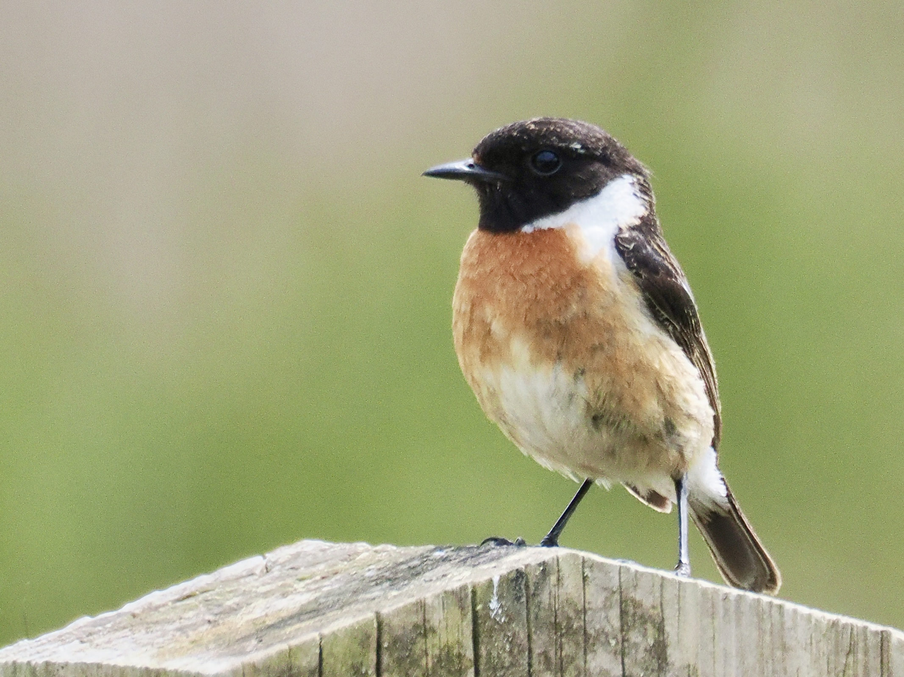
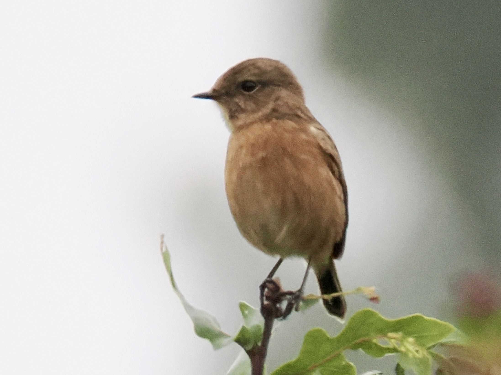
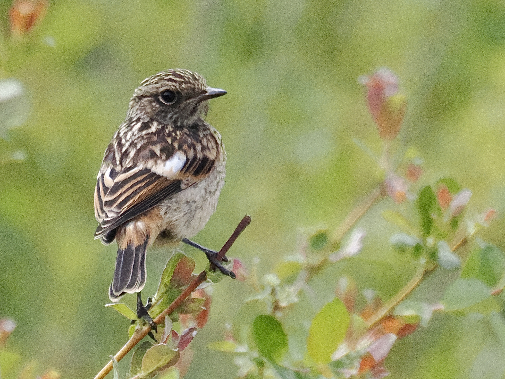

European Stonechat
Saxicola rubicola
Order: Passeriformes
Family: Muscicapidae

A small chat with very twiggy black legs. Male has a black head and back, white collar and orange breast. Found in open scrubby areas, such as heathland.

Female has a brownish head and back. Stonechats are named after their chak calls, which resemble pebbles being tapped together.

Juvenile has quite mottled feathers on the head and back.